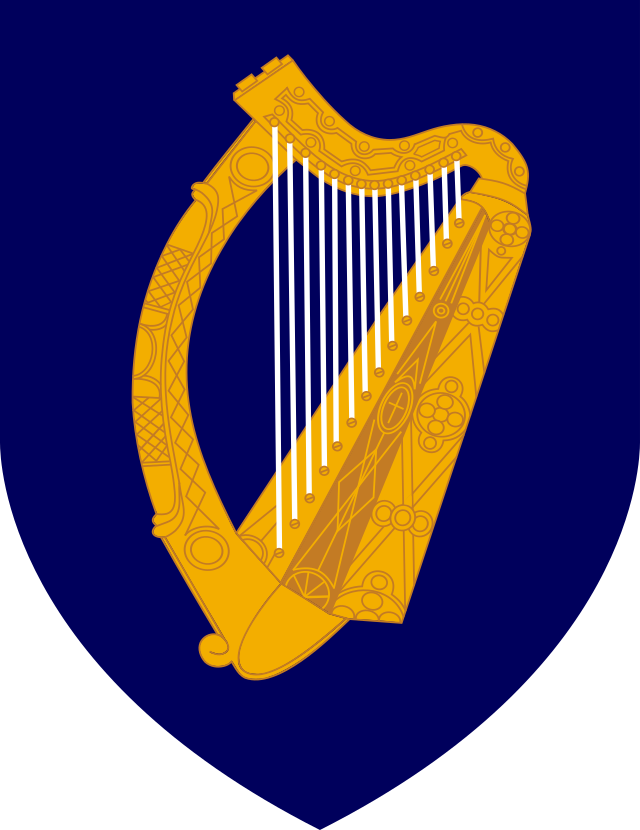
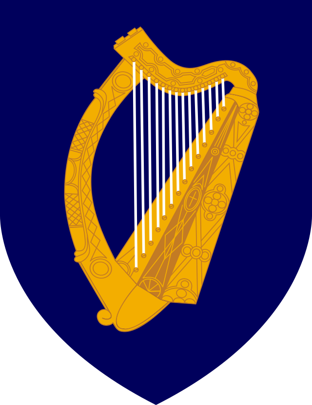

Regenbogenreich
Reist
Sommerurlaub 2023: Irland wir kommen
Diesen Sommer geht es nach Irland. Saftige Wiesen, Whisky und Schafe erwarten uns. :-)
Flagge und Wappen von Irland
 

Die irische Tricolore
(Eine von mehreren) inoffizielle Bedeutungen: Grün, für den katholischen Süden, Orange, für den protestantischen Norden und weiß für den Frieden
zwischen beiden Konfessionen.
Landkarte (Open Street Map)
Größere Karte anzeigen